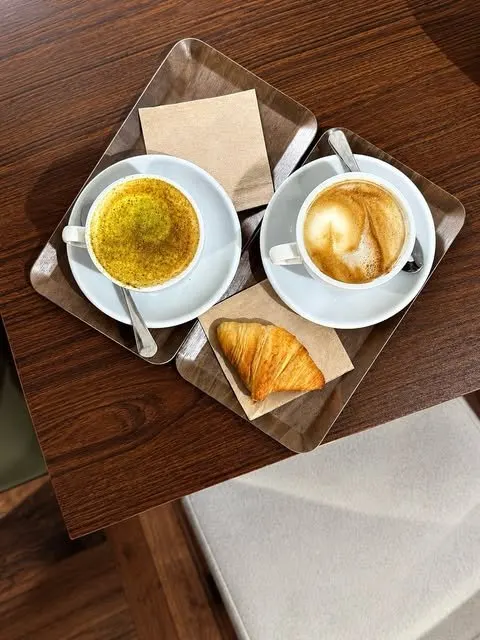
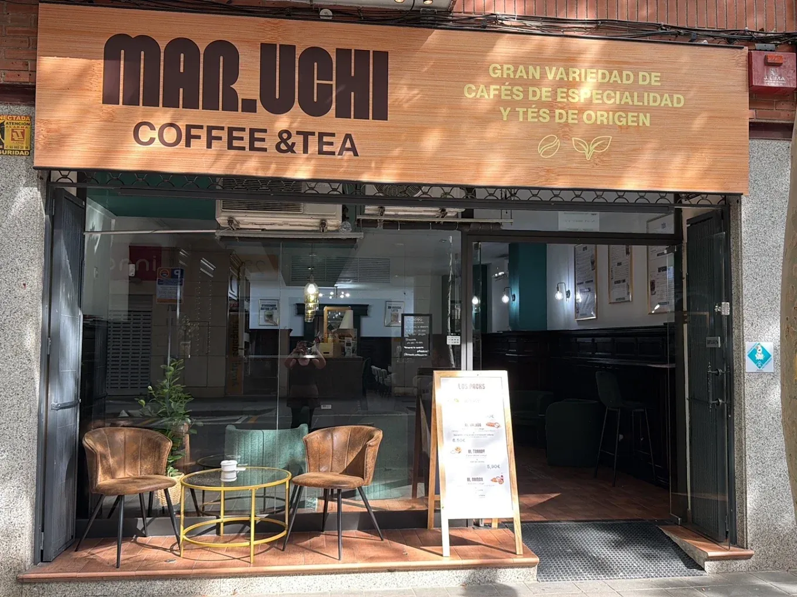

Flat White Mar.Uchi
Doble espresso de especialidad con leche microespumada, suave y redondo.
3,40 €
Café de especialidad · Castelldefels
Grano de especialidad, tés de origen y un rincón cálido a un paso del paseo marítimo. Así es Mar.Uchi.
La idea
«Mar» es el nombre de nuestra propietaria. «Uchi» (家) es japonés y significa hogar. Entre las dos palabras cabe la idea del local entero: especialidad sin solemnidad, una barra donde parar cinco minutos o quedarse toda la tarde. Y sí, «Mar» también significa mar en español — una casualidad bonita, a un paso como estamos del Mediterráneo, pero el origen real es mucho más sencillo: es su nombre.
Café de origen trabajado con cuidado, tés seleccionados taza a taza y repostería para acompañar — pensado para el barrio, no para la foto.
En la barra
Seleccionamos lotes de origen y cuidamos cada extracción, espresso a espresso.
Sencha, oolong, earl grey e infusiones elegidas con la misma exigencia que el café.
Sofás, madera y luz cálida — pensado para el rato largo, no solo el «para llevar».
A un paseo de la playa, con el barrio a un lado y el Mediterráneo al otro.

Detrás de la barra
«Quería crear un espacio donde estar como en casa — café de especialidad, tés caseros y sitio para quedarte el tiempo que haga falta.»Mar RubiniPropietaria de Mar.Uchi Coffee & Tea
Lo dicen ellos
«Nueva cafetería en el centro de Castelldefels, que cuenta con una gran variedad de bebidas, entre ellas café de especialidad y matcha. Servicio muy atento y amable.»
«Un sitio decorado con mucho encanto y mimo, se nota la atención al detalle en cada rincón. Mar encantadora y los matchas riquísimos, especial mención al de chocolate.»
«Contento de poder disfrutar de un lugar donde el café de especialidad es una cultura. Los planchados geniales. Volveré a desayunar siempre que pueda.»
5.0 ★ de media en Google, con 25 opiniones — deja tu reseña aquí.
Síguenos
El espacio
Te esperamos
Fines de semana cerramos — el horario del día a día y cualquier cambio puntual lo confirmamos siempre en Instagram.